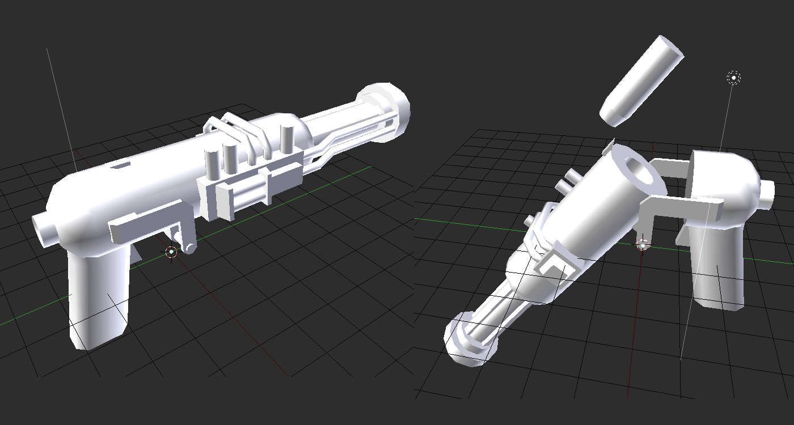
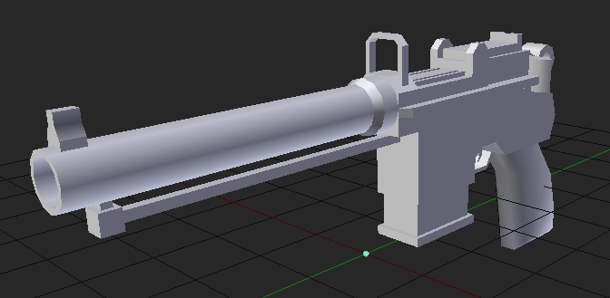

shitarse
The Tale of Two Lenses
It's october of 2023. Having enough disposable income, I finally fulfilled a long dream of mine, buying a telescope. Figuring out what type of telescope I should buy didn't take very long, as this xkcd comic already managed to convince me with one single panel. A reflector telescope it shall be, since it doesn't suffer from chromatic aberration. Chromatic aberration. Huh.Shut the fuck up
It's spring 2024. For a while now, once or twice a week, I spend my evening at my friend's place where we watch movies and have a smoke in his basement. I'm not that big into anime these days, but my friend is, so we watch all sorts of stuff. One show is called "That time I got reincarnated as a slime" (a name which I think sucks ass, the german translation roughly equates to "my rebirth as a slime in a foreign world" which is far better, not only does it away with the cringy casual "oh that one time", but it also uses "rebirth" which is almost biblical in its connotations) (yes the show is isekai slop, I don't care, it's funny, shut the fuck up), and some of the main character's senselessly overpowered abilities are called "black fire" and "black lighting", which fittingly have quite sleek black and blueish effects. Hmm.Time to get cereal
It's now summer, and the beginning of the gun rework is rapidly approaching. A table of gun tiers and types was made, re-made, changed, amended, scrapped and then un-scrapped, all the while I was starting to work on some secret bonus content. Based on these seemingly unrelated ideas that have been floating around in my head for the prior months, I made up the first of the secret weapons: The Aberrator. Initially planned as a beam-type weapon with relatively slow rate of fire, using black lightning cells, and having weapon mods for changing any aspect of the projectile (projectile vs hitscan, penetrating, armor piercing, direct hit vs AoE, afterburn, poison, et cetera). Not long after based on a song I heard, I decided to add a dual-wield variant (as dual-wielded guns were now a fixed part in the gun update plans): Eyes of The Tempest. About identical in most aspects, however instead of a slow rate of fire with powerful long blasts, these guns were supposed to have a higher ammo capacity and fire smaller plasma-like projectiles at a much higher rate of fire. The idea was never fully fleshed out, though.Doing without thinking
About half way through the gun update, I made the model for the Aberrator. A break-action pistol with single-use cells, in a shape similar to large caliber revolver rounds, with a larger bulkier appearance and a crude prototype-like design, with exposed PCB, batteries and capacitors. There was one main problem, though, similar to the old ZOMG design, I didn't exactly know what I wanted, nor did I bother drawing concept art, which meant the model looked...  ...not great.The general design reminds me more of a plastic toy gun, and less of an intimidating evil secret energy blaster. Into the void with it. Maybe it would look better with a proper texture and good animations, but the model alone doesn't convince me anymore.
The old classics
The finished model set there, unused, for months. The gun update came, but the Aberrator was left behind. More than a month later, I decided to part ways with the initial "prototype blaster"-like idea and instead went for something more traditional.The Mauser C96 always sort of fascinated me. It was one of the earliest semi-automatic pistols, it's fed by a stripper clip, has a rather distinctive shape with the magazine being separate from the grip, and while a somewhat popular gun in media, is not as horribly overrated as the Luger. So I began to think.
After brainstorming on Discord, we found a design that works. A C96, but with a more traditional revolver grip instead of the broom handle, heftier barrel and a proper magazine (a modification which I later learned was a real thing). There was some experimentation during the actual modeling phase, like the underbarrel rail-like thing and the lug that sits at the near end of the barrel, but overall the results were everything I had hoped for:  Now a gun that very obviously uses more traditional cartridges can't really make use of the old black lightning cell idea anymore, so a new caliber was invented just for that: .35-800 V9. .35 has a similar bore size as .357 or 9mm, however the case is much longer, carrying a whopping 800 grains of powder equivalent (it is indeed 800 grains of propellant, 798 being sawdust and two grains fucked up evil juice, more on that another time). The general shape and stupidly packed cartridges had some interesting effects: The projectile would be stupidly fast, so rather than using a proper entity projectile, the gun uses hitscan, making bullets substantially faster at long ranges. In addition, because of the high damage output, we can now get away with having a lower rate of fire, and subsequently more recoil, since the mandatory wait period means we have more time for recoil recovery. Add exaggerated recoil as part of the gun's animation, a fire jet coming out of the breech as the casing is being ejected and some custom sounds (being mixed from the .357 sound with more bass and a thunder-like sound overlayed on top), and we get a gun that feels extraordinarily punchy.
Which left one thing open, Eyes of The Tempest. The original idea would have implied substantial stat differences, but due to the low rate of fire of the proper Aberrator, having a dual-wield version with identical stats would be just fine, as it basically just means twice the rate of fire and twice the ammo capacity. One custom texture later and we have a second gun, whith twice the bang, while remaining punchy all the same.